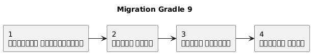
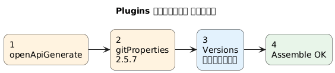
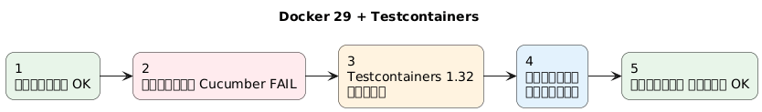
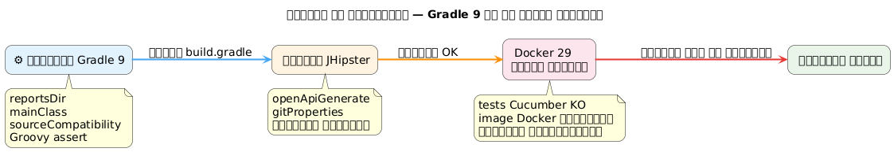
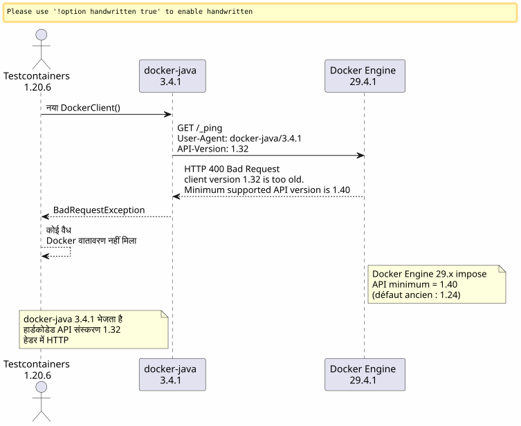
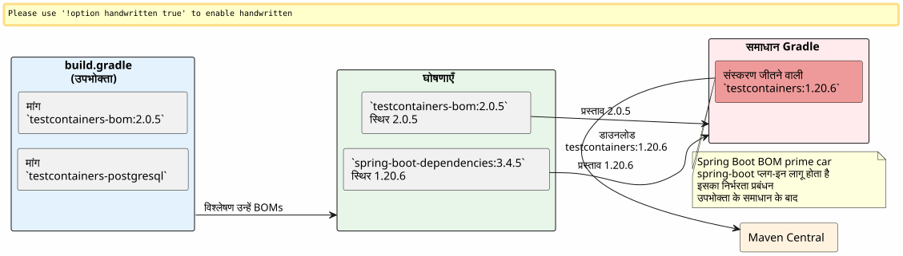
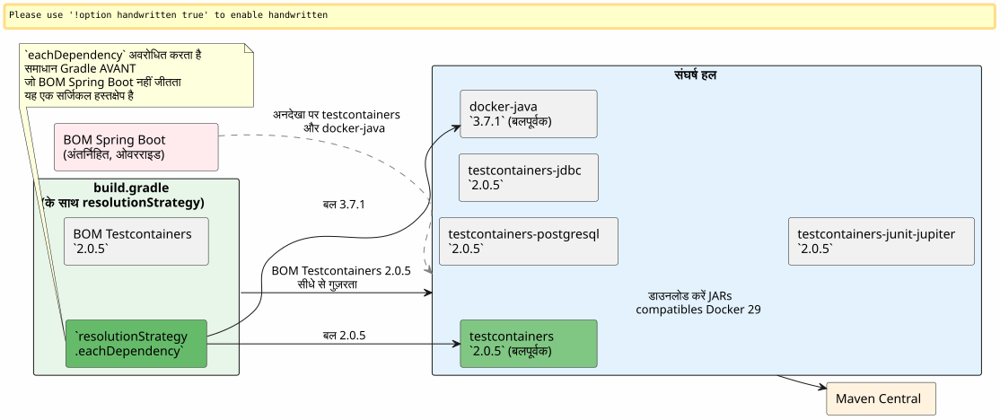

जब Gradle 9, Docker 29 और Testcontainers अपनी पूरी ताकत लगाते हैं : JHipster बिल्ड का debugging
प्रकाशित: 25 April 2026
- सेट: एक JHipster परियोजना, एक बिल्ड जो अब लोड नहीं होती।
- त्रुटि 1: भूत चर `reportsDir
- त्रुटि 2 :
main = \"…\"Gradle 9 में अब उपलब्ध नहीं है - त्रुटि 3 :
sourceCompatibilityपरियोजना की संपत्ति अब नहीं है - त्रुटि 4: तीन-ऑपरेंडेड ग्रोवी एसरशन
- त्रुटि 5: अंतर्निहित निर्भरता
compileKotlin→ `openApiGenerate - त्रुटि 6 :
generateGitPropertiesटूटता है पर `FilterOutputStream.write() - अंत में : Testcontainers मंच पर आता है
- फ़ेज़ 1: डॉकर‑जावा पथ
- फ़ेज़ 2 : वेब खोज और गिटहब ब्रेडक्रंब ट्रेल
- फ़ेज़ 3 : नाम बदलित artefacts का जाल
- फ़ेज़ 4 : समाधान को बलपूर्वक लागू करना
- अंतिम परिणाम
- सुधारों का सारांश तालिका
- निष्कर्ष
आपने पहले से ही इस क्षण का अनुभव किया है जब एक साधारण`./gradlew build`जो आप दिन में सौ बार लॉन्च करते हैं वह अचानक कभी न देखी गई त्रुटि पर क्रैश हो जाता है। इसे लगातार ग्यारह त्रुटियों से गुणा करें, डॉकर इंजन 29 की असंगतता की अच्छी खुराक जोड़ें, और Gradle 9 को छिड़कें जो दस साल से उपयोग में लाई जा रही APIs को मिटा देता है। यहाँ पूरा लॉग बुक है।
लक्ष्य : असंगतियों की श्रृंखला दिखाना।

उद्देश्य : तोड़े हुए प्लगइन को अलग करें।

लक्ष्य : रनटाइम समस्या।

इसे खुद के रूप में पेश करने का एक और तरीका

सेट: एक JHipster परियोजना, एक बिल्ड जो अब लोड नहीं होती।
प्रोजेक्ट`edster`एक JHipster एप्लिकेशन है जिसे 2024 में उत्पन्न किया गया। रूट बिल्ड स्क्रिप्ट`build.gradle`यह महीनों तक स्थिर रहा। फिर हम संस्करण अपग्रेड करने का निर्णय लेते हैं :
| घटक | लक्ष्य संस्करण |
|---|---|
ग्रैडल |
9.4.1 |
जावा |
21.0.11-tem (Eclipse Temurin) |
JHipster |
8.x (framework`tech.jhipster:jhipster-framework:8.11.0`) |
Spring Boot |
3.4.5 |
कोटलिन |
2.3.0 |
डॉकर इंजन |
29.4.1 (API 1.54) |
जावा संस्करण बदलना SDKMAN के माध्यम से होता है :
sdk use java 21.0.11-temपहला लॉन्च :
$ ./gradlew build --no-daemon
FAILURE: Build failed with an exception.
* Where:
Build file '/home/.../edster/build.gradle' line: 18
* What went wrong:
An exception occurred applying plugin request [id: 'jhipster.cucumber-conventions']
> Failed to apply plugin 'jhipster.cucumber-conventions'.
> Could not create task ':cucumberTest'.
> Could not create task ':consoleLauncherTest'.
> Could not set unknown property 'reportsDir' for task ':consoleLauncherTest'हम बिल्ड स्क्रिप्ट के लोड होन से भी आगे नहीं बढ़ पाते। समस्या है`buildSrc/src/main/groovy/jhipster.cucumber-conventions.gradle`.
त्रुटि 1: भूत चर `reportsDir
स्क्रिप्ट`jhipster.cucumber-conventions.gradle`सामग्री :
tasks.register('consoleLauncherTest', JavaExec) {
dependsOn(testClasses)
String cucumberReportsDir = file("$buildDir/reports/tests")
outputs.dir(reportsDir) // <-- reportsDir n'existe PAS
classpath = sourceSets["test"].runtimeClasspath
main = "org.junit.platform.console.ConsoleLauncher"
// ...
}परिभाषित चर है`cucumberReportsDir`. जो उपयोग में लायी जाती है`reportsDir`-- जिसे कहीं भी परिभाषित नहीं किया गया।
सुधार(No output, as the input text is empty)outputs.dir(cucumberReportsDir)
त्रुटि 2 : main = \"…\" Gradle 9 में अब उपलब्ध नहीं है
तत्कालीन पुनरारम्भ :
Could not set unknown property 'main' for task ':consoleLauncherTest' of type org.gradle.api.tasks.JavaExec.Gradle 9 प्रॉपर्टी को हटाता है।main`के हित में`mainClass`कार्यों पर`JavaExec।
सुधार:`mainClass = "org.junit.platform.console.ConsoleLauncher"`
त्रुटि 3 : sourceCompatibility परियोजना की संपत्ति अब नहीं है
नई त्रुटि :
Could not set unknown property 'sourceCompatibility' for root project 'edster' of type org.gradle.api.Project.मूल स्क्रिप्ट था :
sourceCompatibility=17
targetCompatibility=17Gradle 9 इन संपत्तियों को रूट स्तर पर हटाता है। इन्हें एक ब्लॉक के भीतर रहना चाहिए।java.
सुधार:
java {
sourceCompatibility = JavaVersion.VERSION_21
targetCompatibility = JavaVersion.VERSION_21
}त्रुटि 4: तीन-ऑपरेंडेड ग्रोवी एसरशन
पुराने स्क्रिप्ट था :
assert System.properties["java.specification.version"] == "17" || "21" || "24"ग्रूवी में,"21" et "24"`वे सत्य strings हैं। अभिव्यक्ति समाधान करती है(… == "17") || true || true`, जो हमेशा सच है — लेकिन सिंटैक्स वांछित कड़ी पुष्टि के लिए मान्य नहीं है।
सुधार:
assert System.properties["java.specification.version"] in ["17", "21", "23", "24"]त्रुटि 5: अंतर्निहित निर्भरता compileKotlin → `openApiGenerate
बिल्ड प्रगति कर रहा है। Kotlin संकलन सफल रहा। फिर :
Task ':compileKotlin' uses this output of task ':openApiGenerate'
without declaring an explicit or implicit dependency.Gradle 9 कार्यों के बीच निहित निर्भरताओं को अस्वीकार करता है। चूँकि`compileKotlin`वह उत्पन्न स्रोतों को पढ़ता है द्वारा`openApiGenerate`, लिंक की घोषणा करनी चाहिए।
सुधारमें`build.gradle`:
afterEvaluate {
tasks.named("compileKotlin").configure {
dependsOn(tasks.named("openApiGenerate"))
}
}Le `afterEvaluate`आवश्यक है क्योंकि`openApiGenerate`एक एक्सटेंशन (plugin OpenAPI Generator) है और कॉन्फ़िगरेशन चरण के दौरान सीधे सुलभ कार्य नहीं है।
त्रुटि 6 : generateGitProperties टूटता है पर `FilterOutputStream.write()
जावा कंपाइलेशन सफल होती है। संसाधन प्रोसेस किए जाते हैं। फिर :
> Task :generateGitProperties FAILED
No signature of method: java.io.FilterOutputStream.write() is applicable for argument types: (Integer) values: [103]प्लगइन`gradle-git-properties`वर्जन 2.5.0, Java 21 या Gradle 9 के साथ असंगत है। एक आंतरिक बग कॉल करने की कोशिश कर रहा है।`write(int)`Groovy के माध्यम से एक स्ट्रीम पर जिसे बंद कर दिया गया।
सुधारमें`gradle.properties`:
gitPropertiesPluginVersion=2.5.7अंत में : Testcontainers मंच पर आता है
अब तक, यह शुद्ध "build script debugging" था. प्रत्येक त्रुटि Gradle 9 या Java 21 का असंगतत्व थी स्क्रिप्ट में बिल्ड. ऊपर दिए गए छह सुधारों के बाद, यह`./gradlew assemble`वह सफलतापूर्वक पास होता है
लेकिन`./gradlew build`यह परीक्षण भी चलाता है, और Cucumber परीक्षण अस्थायी PostgreSQL को प्रारम्भ करने के लिए Testcontainers का उपयोग करते हैं।
Could not find a valid Docker environment.
EnvironmentAndSystemPropertyClientProviderStrategy: failed with exception BadRequestException
(Status 400: {"message":"client version 1.32 is too old. Minimum supported API version is 1.40"}
UnixSocketClientProviderStrategy: failed with exception BadRequestException
(Status 400: {"message":"client version 1.32 is too old. Minimum supported API version is 1.40"}Testcontainers Docker के साथ संवाद करने में असमर्थ है। दो विभिन्न रणनीतियाँ (पर्यावरण चर + यूनिक्स सॉकेट) एक ही त्रुटि पर विफल होती हैं।

फ़ेज़ 1: डॉकर‑जावा पथ
पहला प्रतिक्रिया : Testcontainers द्वारा उपयोग किए जाने वाले Java Docker क्लाइंट API संस्करण भेजता है`1.32`के HTTP हैंडशेक में, लेकिन Docker Engine 29.4.1 न्यूनतम की मांग करता है`1.40`समस्या क्लाइंट स्तर पर है, डेमन के स्तर पर नहीं।
Testcontainers 1.20.6 द्वारा हल किए गए डॉकर‑जावा संस्करण की जाँच :
$ ./gradlew dependencies --configuration testRuntimeClasspath | grep docker-java
+--- com.github.docker-java:docker-java-api:3.4.1
+--- com.github.docker-java:docker-java-transport:3.4.1डॉकर-जावा 3.4.1, टेस्टकंटेनर्स 1.20.6 से संबंधित। डॉकर-जावा की नवीनतम सार्वजनिक संस्करण 3.5.1 है। आइए इसे संस्करण अपग्रेड करने के लिए बलपूर्वक करने की कोशिश करते हैं via`resolutionStrategy`ब्लॉक में`configurations` de build.gradle:
configurations {
all {
resolutionStrategy.eachDependency { details ->
if (details.requested.group == "com.github.docker-java"
&& details.requested.name.startsWith("docker-java")) {
details.useVersion("3.5.1")
}
}
}
}बिल्ड को फिर से चलाया गया। एक ही त्रुटि:`client version 1.32 is too old`.
ग्रेडल कैश की पुष्टि: JARs को सही तरीके से पुनः डाउनलोड किया गया है, लेकिन त्रुटि अभी भी बरकरार है। docker-java 3.5.1 अभी भी भेज रहा है`1.32`. यह संस्करण Docker Engine 29.4.1 के लिए पर्याप्त नहीं है।
शुद्धिकरण कार्यग्रैडल कैश को पूरी तरह साफ़ करें, बस इसलिए कि यकीन हो:
rm -rf ~/.gradle/caches
rm -rf /path/to/project/.gradleपुराग के बाद पूरा रिलोड। वही त्रुटि।
फ़ेज़ 2 : वेब खोज और गिटहब ब्रेडक्रंब ट्रेल
docker-java 3.5.1 अपर्याप्त है। अब बस यह खोजने के लिए रह गया है कि क्या किसी ने इस सटीक समस्या का सामना किया है।
testcontainers-java और docker-java मुद्दों पर लक्षित खोज :
site:github.com/testcontainers "client version 1.32 is too old"
site:github.com/docker-java "client version 1.32" Docker Engine 29प्रारम्भिक तत्कालीन परिणाम :
-
testcontainers-java#11210—
[Bug]: client version 1.32 is too old. Minimum supported API version is 1.44 -
testcontainers-java#11212—
[Bug]: Docker 29.0.0 could not find a valid Docker environment -
testcontainers-java#11491—
[Bug]: Incompatibility in Ubuntu Github runners with Docker Engine 29.1.*
ब्रेडक्रंब पथ स्पष्ट है: Docker Engine 29.x ने अपना न्यूनतम API संस्करण बढ़ा दिया है।1.24(पुराना दोष) को`1.40`. Testcontainers 1.20.x docker-java 3.4.x API संस्करण की बातचीत करके भेजता है।`1.32`डेमेंन शालीनतापूर्वक लेकिन दृढ़ता से इन्कार करता है।
इश्यू #11491 में, एक मेंटेनर जवाब देता है :
_ हाय, मेरे पास संस्करण 2.0.3 के साथ चल रहा एक प्रोजेक्ट है, जो जीएच रनर पर इंजन 29.1 के साथ काम करता है। क्या आप सभी कृपया जाँच सकते हैं कि कोई संस्करण संघर्ष नहीं है? कृपया, याद रखें कि सभी मॉड्यूल्स को ___ के साथ प्रीफ़िक्स किया गया था`testcontainers-. So, starting with version 2.x we went from`postgresql to testcontainers-postgresql (no response needed; output empty)
इस उत्तर मेंदो महत्वपूर्ण सूचनाएँ :
-
Testcontainers 2.0.3+ समस्या को हल करता है।
-
मॉड्यूल्स ont étéप्रीफ़िक्स
testcontainers-के साथ नाम बदले गए
फ़ेज़ 3 : नाम बदलित artefacts का जाल
नाम बदलना कठोर है। Testcontainers 2.x में, अब कोई भी पुराना नाम इस नाम के साथ काम नहीं करता है :
| पुराना नाम (1.x) | नया नाम (2.x) |
|---|---|
|
|
|
|
|
|
|
अपरिवर्तित |
पहला प्रयास : Testcontainers 2.0.5 BOM लागू करें और नए कलाकृतियों के नाम`build.gradle`.
dependencies {
testImplementation platform("org.testcontainers:testcontainers-bom:2.0.5")
testImplementation "org.testcontainers:testcontainers-postgresql"
testImplementation "org.testcontainers:testcontainers-jdbc"
testImplementation "org.testcontainers:testcontainers-junit-jupiter"
testImplementation "org.testcontainers:testcontainers"
}./gradlew build
FAILURE: Could not find org.testcontainers:jdbc:2.0.5.
Could not find org.testcontainers:junit-jupiter:2.0.5.testcontainers-bom का BOM पर्याप्त नहीं है।क्यों? क्योंकि Spring Boot 3.4.5 अपना स्वयं का BOM निर्भरता प्रबंधन को उजागर करता है।spring-boot-dependencies) कौनजीतता हैटेस्टकंटेनर्स के BOM पर ट्रांज़िटिव समाधान में। Spring Boot फिक्स करता है`testcontainers` à 1.20.6, और इसलिए सभी कलाकृतियाँ जो स्प्रिंग बूट BOM में स्पष्ट रूप से नहीं हैं (जैसे नए`testcontainers-*) वे पुराने नामों की ओर समाधान करते हैं`1.20.6-- जो इस संस्करण में अब नहीं हैं।
इसे निरीक्षण करते हुए`dependencies --configuration testRuntimeClasspath`, वहां पाया जाता है:
+--- org.testcontainers:testcontainers -> 1.20.6 (*)
| \--- org.testcontainers:testcontainers:2.0.5 -> 1.20.6Le →`यह प्रतिस्थापन दर्शाता है: Testcontainers 2.0.5 मांगा है, लेकिन Spring Boot बल डालता है`1.20.6.

फ़ेज़ 4 : समाधान को बलपूर्वक लागू करना
रणनीति दोहरी हो जाती है :
-
docker‑java को संस्करण 3.7.1 पर बाध्य करें (जिसका परीक्षण Docker Engine 29 के साथ संगतता के लिए किया गया है)
-
स्प्रिंग बूट BOM को बायपास करके Testcontainers core को बलपूर्वक 2.0.5 पर सेट करें

अंतिम सुधारमें`build.gradle`:
configurations {
all {
resolutionStrategy.eachDependency { details ->
if (details.requested.group == "com.github.docker-java"
&& details.requested.name.startsWith("docker-java")) {
details.useVersion("3.7.1")
}
if (details.requested.group == "org.testcontainers"
&& details.requested.name == "testcontainers") {
details.useVersion("2.0.5")
}
}
}
}
dependencies {
testImplementation platform("org.testcontainers:testcontainers-bom:2.0.5")
testImplementation "org.testcontainers:testcontainers-jdbc"
testImplementation "org.testcontainers:testcontainers-junit-jupiter"
testImplementation "org.testcontainers:testcontainers-postgresql"
testImplementation "org.testcontainers:testcontainers"
// ... autres dépendances Spring Boot
}Le `resolutionStrategy.eachDependency`यह BOM को बायपास करने का एकमात्र तरीका है।`spring-boot-dependencies`स्प्रिंग बूट प्लगइन द्वारा प्रबंधित। समानता परीक्षण पर`details.requested.name == "testcontainers"`est जानबूझकर सीमित है: केवल कोर मॉड्यूल को ही बलपूर्वक लगाया जाता है। मॉड्यूल`testcontainers-*`वे Testcontainers 2.0.5 के BOM का पालन करते हैं जिसे हमने स्पष्ट रूप से घोषित किया है।
अंतिम परिणाम
$ ./gradlew build --no-daemon
> Task :consoleLauncherTest
[2 containers found]
[2 containers started]
[2 containers successful]
BUILD SUCCESSFUL in 1m 16sTestcontainers 2.0.5 + docker-java 3.7.1 अंत में उनके PostgreSQL कंटेनर Docker Engine 29.4.1 के माध्यम से बनाने में सफल हो गए हैं। अंतिम व्यापार त्रुटि (Cucumber परीक्षण पर HTTP 500) एक पूर्णतः एप्लिकेशन समस्या है जो बिल्ड स्क्रिप्ट से पूरी तरह स्वतंत्र है।
सुधारों का सारांश तालिका
| (No content) | फ़ाइल | समस्या | सुधार |
|---|---|---|---|
1 |
|
परिवर्तनीय`reportsDir`अस्तित्वहीन |
|
2 |
|
`main`अप्रचलित Gradle 9 |
|
3 |
|
`sourceCompatibility`शीर्ष-स्तर प्रतिबंधित Gradle 9 |
ब्लॉक`java { sourceCompatibility = JavaVersion.VERSION_21 }` |
4 |
|
Groovy में सिंटैक्स के अनुसार अमान्य अभिकथन |
|
5 |
|
अंतर्निहित निर्भरता`compileKotlin`(No characters) |
|
6 |
|
`gitPropertiesPluginVersion`असंगत Java 21 |
|
7 |
कैश ग्रैडल |
docker-java 3.5.1 परीक्षण किया गया, समाधान हो गया परन्तु अपर्याप्त। |
शुद्धिकरण + पासेज docker-java 3.7.1 |
8 |
|
Testcontainers 1.20.6 असंगत Docker Engine 29 |
Testcontainers 2.0.5 को जबरदस्ती + प्रीफ़िक्स`testcontainers-*`+ resolutionStrategy vs Spring Boot BOM |
निष्कर्ष
यदि आपका JHipster/Gradle बिल्ड Gradle 9 + Docker Engine 29 में अपग्रेड करने के बाद क्रैश हो जाता है, तो त्रुटियाँ दो श्रेणियों में विभाजित होती हैं:
बिल्ड स्क्रिप्ट त्रुटियाँपहले 6 : Gradle 9 उन गुणों और सिंटैक्स को हटा देता है जो वर्षों से चल रहे थे`sourceCompatibility=, `main =, reportsDir). ये यांत्रिक प्रवासन हैं एक बार जब आप नई API को जान लेते हैं।
डॉकर रनटाइम त्रुटियाँ(अंतिम दो) : Docker Engine 29.4.1 API क्लाइंट्स (< 1.40) को बाहर करता है। Testcontainers 1.20.6 (Spring Boot 3.4.5 द्वारा आवश्यक) docker-java 3.4.1 का उपयोग करके 1.32 भेजता है। केवल Testcontainers 2.0.5 + docker-java 3.7.1 समस्या को हल करता है, artifacts के नाम बदलने और संस्करण को बलपूर्वक लगाने के द्वारा।`resolutionStrategy.eachDependency`के रूप में केवल तरीका जिससे Spring Boot का अंतर्निहित BOM को परिहार किया जा सके
पोजेक्ट के मूल में ग्रेडल बिल्ड स्क्रिप्ट अब साफ़ हो गया है।`./gradlew build`Java 21, Gradle 9.4.1, Spring Boot 3.4.5 और Docker इंजन 29.4.1 पर चलता है।